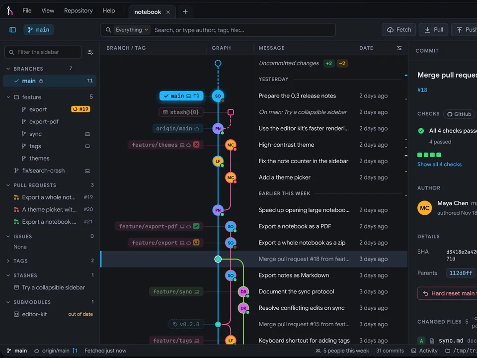

Bogdan Roatis
Senior Mobile Engineer
13+ years building native apps for Android and iOS, from first idea to release. Most recently Mobile Lead at STEM, where I built the stem player iOS app from the ground up.
Personal projects

Apps I’ve worked on
STEM
formerly Kano2022 – 2026stem player
A music creation app for iOS for splitting songs into stems and making remixes, built from the ground up in SwiftUI and taken through to the App Store.
Video by Jeong Mo Choi
App Storestem projector
A palm-sized video projector with a haptic touch ring. Its launcher, settings and movie apps, built in Kotlin on a shared set of modular libraries.
Video by James Hicks
- SKOOTCarbon-offset navigation, GPS and carpool app2021 – 2022
- PeakBrain-training games2020
- MoneseMobile money account for the UK and Europe2019 – 2020
- AlfrescoOpen-source enterprise content apps, at Ness Digital Engineering2017 – 2019
- bunqBiometric sign-in from Veridium’s Android SDK, at VOX2016 – 2017
- Text Free and SidelineAndroid apps, at Softvision2013 – 2016
CV
Every role in full, with skills and education.